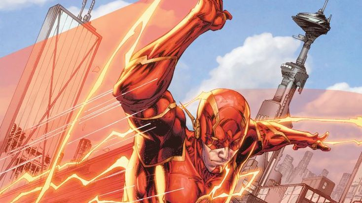

He is the one who DC built the entire Flash persona around. Yes, others have come and gone over the years, Wally West, Kid Flash, Jay Garrick, and Bart Allen. However, none are as important as Barry Allen. the Green Lantern, there have been many iterations of The Flash.
 index link